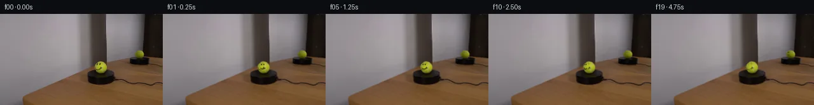

![首帧]()

Round 00
2026-11-05T04:37:31.965858+00:00像素候选变化代码 +184/−0inspection 更新
pixels 178273527de1428b · code 7293db51491ec530
查看本轮 generate.py 真实 diff
--- previous/generate.py
+++ current/generate.py
@@ -0,0 +1,184 @@
+#!/usr/bin/env python3
+"""Generate a locked-camera tennis-ball rotation from the supplied first frame."""
+
+from pathlib import Path
+import math
+
+import numpy as np
+from PIL import Image, ImageDraw, ImageFilter
+
+import artifact_io
+
+
+ROOT = Path(__file__).resolve().parent
+W, H = 256, 144
+SS = 4
+
+
+def polynomial_ball_colour(src, cx, cy, rx, ry):
+ """Fit the photographed ball lighting while excluding dark ink/shadow pixels."""
+ yy, xx = np.mgrid[0:H, 0:W]
+ dx = (xx - cx) / rx
+ dy = (yy - cy) / ry
+ inside = dx * dx + dy * dy < 0.76
+ # The tennis felt has green substantially above blue. Requiring a useful
+ # brightness omits the black face, rim, background, and platform.
+ fsrc = src.astype(np.float64)
+ candidates = inside & (fsrc[..., 1] > 105) & (fsrc[..., 1] > fsrc[..., 2] * 1.45)
+ x = dx[candidates]
+ y = dy[candidates]
+ design = np.column_stack((np.ones_like(x), x, y, x*x, y*y, x*y,
+ x*x*y, x*y*y))
+ full_design = np.stack((np.ones_like(dx), dx, dy, dx*dx, dy*dy, dx*dy,
+ dx*dx*dy, dx*dy*dy), axis=-1)
+ estimate = np.empty_like(fsrc)
+ for channel in range(3):
+ coeff, *_ = np.linalg.lstsq(design, fsrc[..., channel][candidates], rcond=None)
+ estimate[..., channel] = np.sum(full_design * coeff, axis=-1)
+ return np.clip(estimate, 0, 255)
+
+
+def face_shape_mask(cx, cy, scale=1.0):
+ """A generous native-resolution mask around the photographed smiley ink."""
+ canvas = Image.new('L', (W * SS, H * SS), 0)
+ d = ImageDraw.Draw(canvas)
+ s = SS
+ def ellipse(box, fill=255):
+ d.ellipse(tuple(int(round(v*s)) for v in box), fill=fill)
+ ellipse((cx-5.3*scale, cy-6.9*scale, cx-1.1*scale, cy-2.1*scale))
+ ellipse((cx-1.7*scale, cy-6.9*scale, cx+2.1*scale, cy-2.0*scale))
+ d.arc(tuple(int(round(v*s)) for v in
+ (cx-6.0*scale, cy-2.1*scale, cx+4.2*scale, cy+5.6*scale)),
+ start=13, end=164, fill=255, width=max(1, int(2.7*scale*s)))
+ canvas = canvas.filter(ImageFilter.GaussianBlur(0.42 * SS))
+ return np.asarray(canvas.resize((W, H), Image.Resampling.LANCZOS), dtype=np.float64) / 255.0
+
+
+def make_clean_main(src):
+ """Remove only the dark photographed face ink, retaining felt and shading."""
+ fitted = polynomial_ball_colour(src, 158.0, 83.8, 9.5, 9.5)
+ shape = face_shape_mask(157.0, 84.0)
+ luminance = src.astype(np.float64).mean(axis=2)
+ fitted_lum = fitted.mean(axis=2)
+ # Darkness relative to the fitted local felt selects actual ink. A small
+ # soft margin removes compressed/antialiased edge pixels of the marking.
+ darkness = np.clip((fitted_lum - luminance - 7.0) / 55.0, 0.0, 1.0)
+ alpha = np.clip(shape * darkness * 1.32, 0.0, 1.0)
+ alpha = alpha[..., None]
+ return np.clip(src * (1.0-alpha) + fitted * alpha, 0, 255).astype(np.uint8)
+
+
+def draw_smiley_layer(cx, cy, radius, phase, mirror=False, softness=0.0):
+ """Draw a longitude-projected smiley and clip it to its spherical ball."""
+ layer = Image.new('RGBA', (W*SS, H*SS), (0, 0, 0, 0))
+ if math.cos(phase) <= 0.015:
+ return layer
+
+ d = ImageDraw.Draw(layer)
+ projected_center = cx + radius * 0.72 * math.sin(phase)
+ squash = max(0.035, math.cos(phase))
+ if mirror:
+ projected_center = cx - radius * 0.72 * math.sin(phase)
+
+ scale = radius / 9.5
+ ink = (47, 52, 13, 224 if mirror else 242)
+ eye_y = cy - 3.9 * scale
+ eye_half_h = max(0.48, 1.15 * scale)
+ eye_half_w = max(0.16, 0.72 * scale * squash)
… diff truncated; 97 more lines …